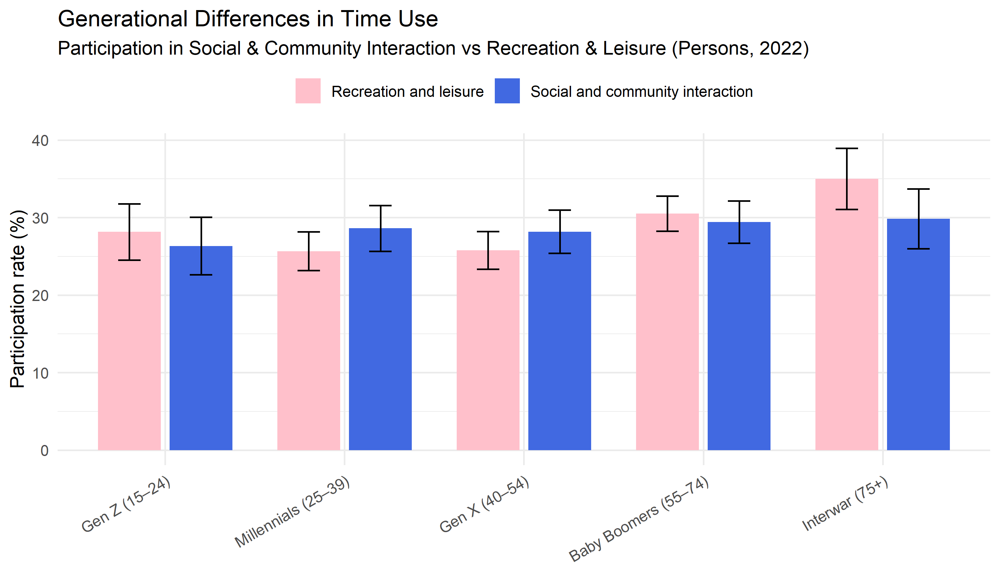
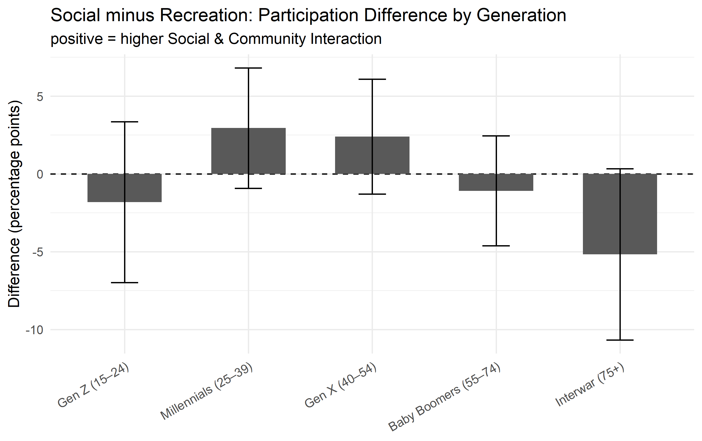
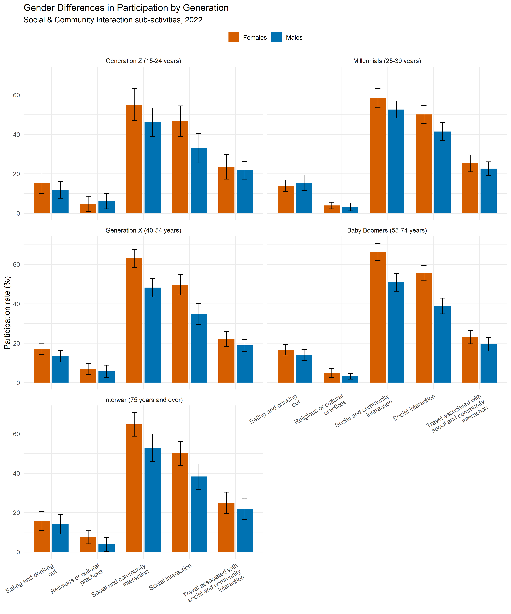
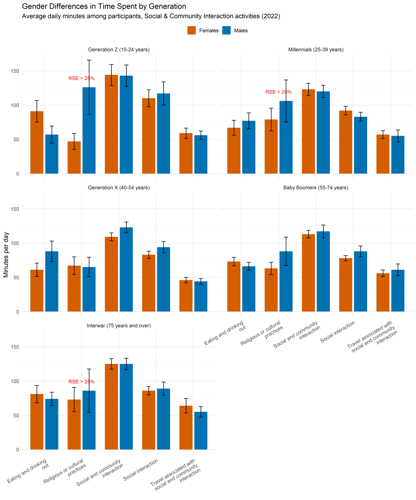
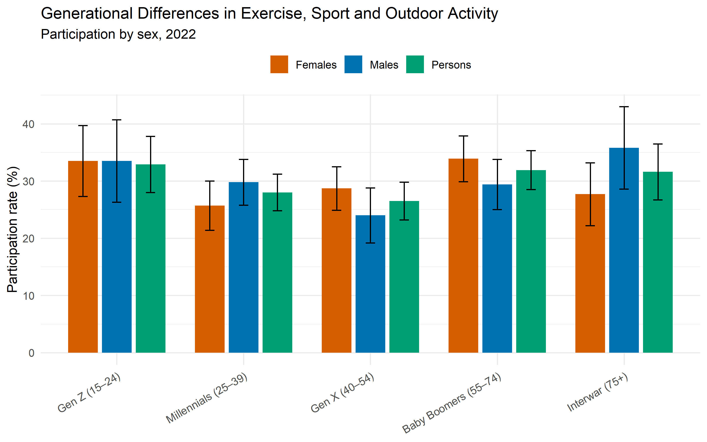
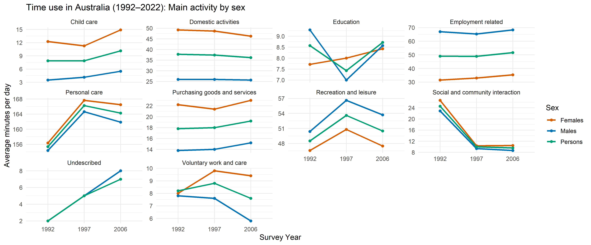
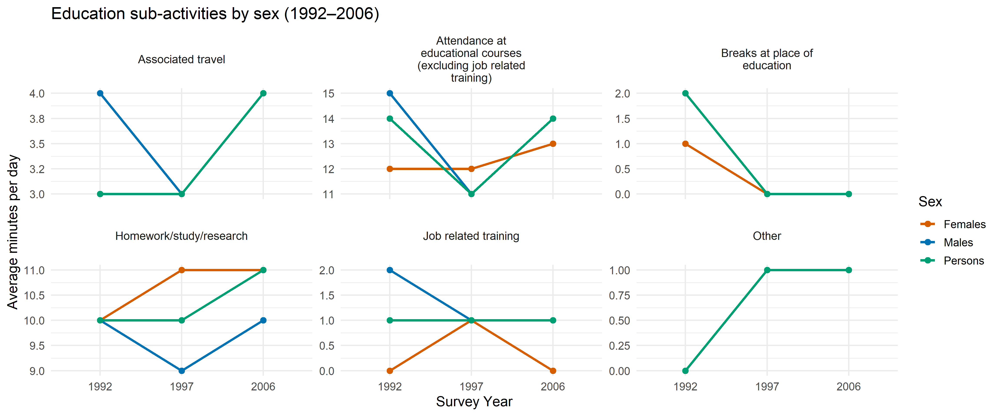

Background: Published Claims About Reading Behaviour
The three articles offer contrasting interpretations of reading trends in Australia. Article (1) by ABC News (2025, July 14) reported an apparent decline in young men’s reading, citing ABS survey data showing only 10.1% of males aged 15–24 read on a given day. Article (2), an opinion piece in The Age (Jack, 2025, July 21), built on the same figures, attributing the decline to cultural shifts such as podcasts, streaming, and publishing practices. Both accounts correctly identified that young men had the lowest reading participation, but their framing was overstated, as they relied narrowly on a single dataset and emphasised a gender gap without considering survey limitations such as the exclusion of online reading.
In contrast, Article (3) from The Guardian (Evershed, 2025, August 17) provided a broader and more balanced view. The ABS plots showed that young men had the lowest daily reading participation. However, the overlapping confidence intervals indicated that male and female rates were statistically similar in most generations, except for Gen X. It also drew on multiple datasets (ABS, NAPS, HILDA), discussed survey definitions, and showed that reading had declined across both genders. Therefore, while Articles (1) and (2) presented a striking narrative, Article (3) provides the most accurate and appropriate summary of the evidence.
2022 Time Use Data Exploration
Research Questions
From ABS_leisure_2022.xlsx file, three interesting questions can be explored as follows:
Are younger generations more likely to participate in social and community engagement activities compared to recreation and leisure activities?
Do men and women spend their time differently when it comes to social and community interaction?
Does aging affect how much people engage in sports and outdoor activities?
Data Preparation
All tables in ABS_leisure_2022.xlsx were reviewed to determine their relevance to the research questions. Tables 1.1 to 1.6 were selected as the primary sources for analysis.
Created function to read data from each Excel worksheet into R and inspect the structure of the imported tables.
Created a tidying function to transform each dataset into a consistent structure with five key variables: main_activity, sub_activity, age_group, sex, and value.
Renamed the value column in each table to descriptive names:
participant_proportion (Table 1.1)
margin_of_error (Table 1.2)
avg_time_perday_participant (Table 1.3)
par_rse_percent (Table 1.4)
avg_time_perday_population (Table 1.5)
pop_rse_percent (Table 1.6)
Joined all six tidy tables into a single dataset using common keys (main_activity, sub_activity, age_group, sex), and checked for missing values and inspected data structure.”
Converted numeric-like fields (participant_proportion, margin_of_error, par_rse_percent, pop_rse_percent) from character to numeric.
Converted average-time-per-day fields (avg_time_perday_participant, avg_time_perday_population) from “HH:MM” to minutes (stored as *_min; originals retained for audit).
Imputed two Male pop_rse_percent NAs noted as “not available for publication” by ABS:
Generation Z × Playing games and puzzles × Males
Millennials × Listening to music, radio, podcast × Males
using the mean of the corresponding Females and Persons values within the same activity × generation. No other cells altered.
Added imputed_flag (1 = imputed, 0 = original) for transparency and sensitivity checks. Code
Recheck missingness and confirm final data structure
Generational Differences in Social and Leisure Activities
Are younger generations more likely to participate in social and community engagement activities compared to recreation and leisure activities?
The analysis used the Persons population. For each generation, participation was summarised for Social & community interaction and Recreation & leisure by averaging the participation proportions across their sub-activities.
Uncertainty was represented using a conservative margin of error (MoE), calculated as the root-mean-square (RMS) of sub-activity MoEs. Interpretation relied on visual inference: differences were considered clear when the ±MoE ranges did not overlap and uncertain when they did.
The participation proportions and their associated margins of error can be visualised as follows.

Figure 1: Participation rates in Social & community interaction and Recreation & leisure, by generation (Persons). Error bars show ±RMS margin of error across sub-activities.
Participation in Social & community interaction and Recreation & leisure shows only modest variation across generations. Among younger cohorts, Generation Z are slightly more engaged in Recreation & leisure, while Millennials lean marginally toward Social & community interaction. For Generation X, participation levels are almost identical, whereas older cohorts (Baby Boomers and Interwar) show somewhat higher engagement in Recreation & leisure. However, because error bars overlap in all cases, these differences remain uncertain. To clarify whether any generational gaps are statistically meaningful, it is useful to examine a difference plot that focuses directly on Social minus Recreation.

Figure 2: Difference in participation (Social − Recreation) by generation (Persons). Bars show Social minus Recreation; error bars are ±sqrt(MoE_social^2 + MoE_recreation^2). Error bars crossing zero indicate uncertain differences.
Across all generations, differences between Social & community interaction and Recreation & leisure are modest and statistically uncertain, as every error bar crosses the zero line. This means we cannot claim with confidence that one activity consistently dominates the other for any generation.
Conclusion
The bar chart (Figure 1) and the difference plot (Figure 2) show that participation in Social & community interaction and Recreation & leisure is broadly similar across all generations. While small shifts are visible, with Generation Z and older cohorts leaning toward Recreation & leisure and Millennials toward Social & community interaction, but these differences are modest and statistically uncertain once margins of error are considered. Overall, the evidence does not support the claim that younger generations are more likely to engage in Social & community interaction than in Recreation & leisure.
Gender Differences in Social and Community Interaction
Do men and women spend their time differently when it comes to social and community interaction?
The analysis focused on Social & community interaction activities. For each sub-activity, participation proportions were summarised separately for men and women, with uncertainty represented by conservative root-mean-square (RMS) margins of error (MoE). Average time spent per day (among participants) was also compared between men and women, with uncertainty summarised using RMS relative standard errors (RSE). Visual inference was applied: differences were judged clear when error bars did not overlap, and uncertain when they did.

Figure 3: Participation in Social & Community Interaction sub-activities by sex and generation (2022). Bars show participation proportion with ±RMS MoE.
Participation in social and community interaction sub-activities is generally higher for women than men, but most of these gaps are statistically uncertain because error bars overlap. The one clearer exception is social interaction, where women’s participation is significantly higher among Generation X and Baby Boomers. For other sub-activities such as social and community interaction, apparent gender differences are modest and not statistically reliable.
However, to fully understand gendered patterns of time use it is important to also examine the duration of time spent when participating.

Figure 4: Average daily minutes spent (among participants) on Social & Community Interaction sub-activities by sex and generation (2022). Bars show means with ±RMS RSE-based error. Estimates with RSE > 25% are considered unreliable.
Among those who do participate, men and women spend broadly similar amounts of time per day on most social and community interaction activities. Clearer differences appear in some areas: men spend longer on eating and drinking out across all generations, while women spend slightly more time on social interaction in younger cohorts (Gen Z and Millennials). For other activities, such as travel related to social activities, averages are similar. However, many of these gaps are modest relative to uncertainty, and some estimates (e.g., religious or cultural practices) have RSE > 25%, making them unreliable for firm interpretation.
Conclusion
Overall, the participation (Figure 3) and time-use plots (Figure 4) show that gender differences in social and community interaction arise mainly from participation rates rather than time spent. Women are more likely to participate, especially in social interaction for Gen X and Baby Boomers. Among participants, time spent is broadly similar, with men tending to spend more time on eating and drinking out (except Gen Z, where women spend slightly longer) and women spending more time on social interaction in younger cohorts. Most other differences are modest and uncertain.
Exercise, Sport, and Outdoor Activity by Generation
Does aging affect how much people engage in sports and outdoor activities?
The analysis focused on the Recreation & leisure sub-activity Exercise, sport and outdoor activity. For each generation, participation proportions were summarised separately for males and females, with uncertainty represented by conservative root-mean-square (RMS) margins of error (MoE). Visual inference was applied: differences were judged clear when error bars did not overlap, and uncertain when they did.

Figure 5: Participation in Exercise, Sport and Outdoor Activity by sex and generation (2022). Bars show participation proportion with ±RMS MoE.
The plot shows that participation in exercise, sport and outdoor activity varies across generations, but not in a simple age-driven decline. Gen Z record relatively high participation, which drops among Millennials and Gen X, likely reflecting reduced free time due to work and family commitments. Rates then increase again among Baby Boomers and the Interwar generation, who may have more discretionary time. Within each generation, males and females participate at broadly similar rates, with sex gaps statistically uncertain due to overlapping error bars.
Conclusion
From Figure 5, the evidence suggests that aging alone does not consistently reduce participation in sports and outdoor activities. Engagement follows a U-shaped pattern: highest in the youngest and oldest cohorts and lower in mid-adulthood, reflecting life-stage and time availability rather than biological age. Sex differences are modest and uncertain, making generation (life stage) the stronger influence.
Historical Changes in Australian Time Use
Historical Data Preparation
All tables in ABS_leisure_historic.xlsx were reviewed to determine their relevance to the research question. Tables 1 were selected as the primary sources for analysis.
Read data from each Excel worksheet into R and inspect the structure of the imported tables.
Tidy t1_historic (adapting Q2(b)–IDA Step 3) to a long format with five fields: main_activity, sub_activity, year, sex, and value.
Rename value to mins_perday and convert HH:MM durations to numeric minutes
Check missingness and confirm final data structure
The analysis used ABS historic time-use data (1992, 1997, 2006). Average daily minutes were summarised for each main activity by sex and survey year. Results were visualised using line plots, with facets to display either main activities or sub-activities within a category. Visual inference was applied: changes were interpreted as meaningful when consistent trends appeared across years, and uncertain when lines were flat or crossed.

Figure 6: Average minutes per day spent on main activities in Australia, 1992–2006, by sex. Lines show the mean daily time allocated to each ABS main activity, separately for males, females, and the total population.
Changes in Australians’ time use, 1992–2006: Key observations fromFigure 6
Personal care: Largest share of time; stable with minor variation, reflecting biological needs.
Employment-related activities: Higher for men, small increase for women, narrowing the gender gap.
Domestic activities: Higher for women but declined slightly; men’s contribution rose, showing slow convergence in unpaid labour.
Child care: Increased for both sexes, consistent with childcare reforms and dual-income households.
Education: U-shaped pattern; dip in 1997, recovery in 2006 with higher education expansion.
Recreation and leisure: Peaked in 1997, declined by 2006, foreshadowing growth of digital leisure.
Social and community interaction: Sharp fall after 1992, reflecting declines in civic and community participation.
Voluntary work and care: Rose in 1997 then fell by 2006.
Purchasing goods and services & Undescribed: Small or negligible changes.
Overall, from 1992 to 2006, Australians’ time use remained anchored in personal care, but shifts emerged in work, care, and leisure. Gender gaps narrowed slightly as women increased paid work and men modestly expanded domestic roles. Child care and education gained importance with policy reforms and higher education expansion, while traditional leisure and civic engagement declined, reflecting the early influence of digital technologies and weakening community participation. These changes reflect broader social transformations of the 1990s–2000s, including dual-income households, education growth, and shifting patterns of social life.
Education Time Use Over Time
Among the main activities, Education stands out with a clear U-shaped trend between 1992 and 2006, declining in 1997 before recovering in 2006. To better understand what drives this pattern, the analysis examines the underlying sub-activities within Education. Breaking this category down shows which forms of study or training contributed to the overall changes, and whether these patterns differed between males and females.

Figure 7: Education sub-activities by sex, Australia 1992–2006.
Educational courses (excluding job training): The dominant sub-activity. Clear dip in 1997 followed by recovery in 2006, driving the U-shaped pattern seen in the main activity.
Homework/study/research: Fairly stable, with females spending slightly more time than males across all years.
Associated travel: Mirrors the course pattern, dipping in 1997 and rising again in 2006, indicating travel is tied to course attendance.
Job-related training: Minor overall, but with a small rise in 1997 for females before returning to earlier levels.
Breaks at place of education & Other: Negligible, with little contribution to overall trends.
Education’s U-shaped trajectory between 1992 and 2006 is explained almost entirely by fluctuations in attendance at courses and related travel, while study time remained steady and job-related training played only a small role. Sex differences were minor, with females consistently spending slightly more time on study. These results suggest that the mid-1990s dip reflects structural factors in education participation rather than behavioural shifts in how individuals used their study time.
Conclusion
Between 1992 and 2006, Australians’ daily routines remained anchored in personal care, but important shifts occurred in work, care, leisure, and education. Gender gaps narrowed slightly as women increased their participation in paid employment and men modestly expanded their share of domestic activities, while child care grew in prominence in line with dual-income family structures and childcare reforms. Leisure peaked in the mid-1990s but declined by 2006, and social and community interaction fell sharply, reflecting weakening civic participation and the early influence of digital technologies on how people spent their free time. Education showed a distinctive U-shaped trajectory, explained almost entirely by fluctuations in course attendance and associated travel, while study time remained steady and job-related training played only a minor role. Together, these results suggest that although the broad structure of time use was stable, Australians adapted their daily activities in response to wider social transformations of the 1990s–2000s, including rising female labour-force participation, expansion of higher education, dual-income households, and changing forms of leisure and community engagement.
Resources
The materials used for this report are:
Wickham H, Averick M, Bryan J, Chang W, McGowan LD, François R, Grolemund G, Hayes A, Henry L, Hester J, Kuhn M, Pedersen TL, Miller E, Bache SM, Müller K, Ooms J, Robinson D, Seidel DP, Spinu V, Takahashi K, Vaughan D, Wilke C, Woo K, Yutani H (2019). “Welcome to the tidyverse.” Journal of Open Source Software, 4(43), 1686. doi:10.21105/joss.01686.
Tierney N, Cook D (2023). “Expanding Tidy Data Principles to Facilitate Missing Data Exploration, Visualization and Assessment of Imputations.” Journal of Statistical Software, 105(7), 1-31. doi:10.18637/jss.v105.i07 https://doi.org/10.18637/jss.v105.i07.
Garrett Grolemund, Hadley Wickham (2011). Dates and Times Made Easy with lubridate. Journal of Statistical Software, 40(3), 1-25. URL https://www.jstatsoft.org/v40/i03/.
I used ChatGPT(https://chat.openai.com/) to provide R coding guidance that were used for data manipulating for desired result and visualization including fixing code, then check grammar and vocabulary error. The final output is authored by me, critically reviewed for accuracy, and represents my own thoughts. I take full responsibility for the final content.